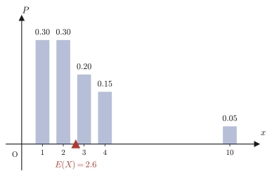
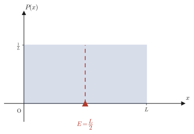
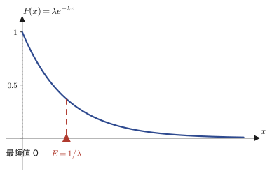

第14章期待値 — 離散から連続へ
「期待値」という言葉自体は，高校の数学Aですでに登場している．サイコロを1回投げて出た目の期待値は $3.5$，宝くじの当たり金額の期待値を計算して「割に合うかどうか」を判断する——そういった計算を，読者はすでに知っているはずである．そこでの主役は，$1,2,\dots,6$ のようにとびとびの値（離散的な値）しかとらない確率変数だった．しかし，自然界や工学の現場で扱いたい量の多くは，そうはいかない．たとえば「気体分子の速さ」「放射性原子が崩壊するまでの時間」「測定誤差の大きさ」は，理屈のうえでは $0$ から $\infty$ の間のどんな実数値でもとりうる．このような連続的な確率変数の期待値を，どう定義すればよいのだろうか．
本章の答えは一言で言えば「和（$\Sigma$）を積分（$\int$）に置き換える」である．しかしこれは思いつきではなく，$\Sigma$ が $\int$ へと姿を変えていく過程を，$n\to\infty$ の極限として一歩ずつ追いかけることで得られる，必然的な結論である．この「和の極限が積分になる」という考え方はすでに第5章5.3節でリーマン和として学んでいる．本章では，その考え方を確率の言葉で読み替え，離散的な期待値の定義から出発して，連続的な確率変数の期待値 $\displaystyle E=\int_{-\infty}^{\infty}xP(x)\,dx$ にたどり着くまでの橋を，1枚ずつ架けていく．
- 離散的な確率変数の期待値（平均値）$\displaystyle E_n=\sum_{k=1}^n x_k P_k$ の定義と，具体的な計算
- 確率変数が連続的な値をとるとき，「その1点をとる確率」がなぜ意味をもたなくなるか，という新しい問題
- 確率密度関数 $P(x)$ の考え方：$P(x)$ 自身は確率ではなく，微小区間の幅を掛けてはじめて確率 $P_k=P(x_k)(x_{k+1}-x_k)$ になる「密度」であること
- 区分求積法（第5章5.3節の応用）：$\displaystyle\lim_{n\to\infty}\sum_{k=1}^n f\!\left(\frac{k}{n}L\right)\frac{L}{n}=\int_0^L f(x)\,dx$ という和から積分への橋渡し
- 上の区分求積法を，規格化条件 $\sum P_k=1$ と期待値 $\sum \frac{k}{n}L\cdot P_k$ の両方に適用し，連続的な確率変数の期待値 $\displaystyle E=\int_0^L xP(x)\,dx$ を導く
- 一様分布・線形分布・指数分布といった具体的な密度関数で期待値を計算する練習と，材料科学・物理学（マクスウェル分布，放射性崩壊の平均寿命）への橋渡し
もとにしたノート：望月泰英『数学ノート 確率の基礎』 pp. 5–6．
14.1 離散的な確率変数と期待値
サイコロを1回投げる，コインを3回投げる，福引を1回引く——このような試行の結果を実数値に対応させたものを確率変数（random variable）とよぶ．たとえばサイコロの「出た目」は，試行の結果（$1$の目が出る，$2$の目が出る，……）のそれぞれに，$1,2,3,4,5,6$ という数値を対応させたものだと考えれば，確率変数の一種である．一般には，次のように定める．
定義14.1 確率変数と（離散的な場合の）期待値
ある試行において，起こりうる結果に応じて $n$ 個の実数値 $x_1,x_2,\dots,x_n$ のいずれかをとる量 $X$ を（離散的な）確率変数という．$X$ が値 $x_k$ をとる確率を $P_k$（$k=1,2,\dots,n$）と書く．このとき，確率の定義（第13章）から $P_k\ge 0$ かつ $\displaystyle\sum_{k=1}^n P_k=1$ である．$X$ の期待値（expectation，または平均値，mean）$E_n$ を，各々の値にその値が起こる確率を掛けて足し合わせたもの
\begin{equation} E_n=\sum_{k=1}^{n} x_k \cdot P_k \label{eq:14-discrete} \end{equation}によって定義する．
この定義がなぜ「平均」とよぶにふさわしいのかを，具体的な数値でまず確認しよう．たとえば $X$ が値 $2,5,9$ を確率 $\frac13$ ずつでとるとすれば，期待値は $E_3=2\cdot\frac13+5\cdot\frac13+9\cdot\frac13=\frac{2+5+9}{3}=\frac{16}{3}$ となり，これは単純に $3$ つの値を足して $3$ で割った「算数の平均」に一致する．一般に，$n$ 個の値を等確率（各 $P_k=\frac1n$）でとる場合，式\eqref{eq:14-discrete}は $E_n=\dfrac1n\displaystyle\sum_{k=1}^n x_k$ となり，これはまさに算数でおなじみの相加平均である．期待値とは，この「単純平均」を，各々の値の起こりやすさ（確率）で重みづけした一般化にほかならない．
イメージ：期待値は分布の「重心」
数直線上の位置 $x_k$ に，重さ $P_k$ のおもりを置いたとしよう（全部の重さの合計は $\sum P_k=1$ である）．このとき，これらのおもり全体を支えるつりあいの位置（重心）が，ちょうど期待値 $E_n=\sum x_k P_k$ である．これは物理で習う「質点系の重心の公式」$\bar x=\dfrac{\sum m_k x_k}{\sum m_k}$ で，質量の合計を$1$に規格化した場合（$\sum m_k=1$）とまったく同じ式である．図14.1は，値によって確率（＝おもりの重さ）が異なる例を示したものである．値 $10$ は他と比べて大きいが，それをとる確率はわずか $0.05$ しかないため，重心（期待値）は $10$ の側にはあまり引っぱられず，確率の大きい $1,2$ の付近に留まっていることが読み取れる．

例題14.1 サイコロの出た目の期待値
1個のサイコロを1回投げるとき，出た目 $X$ の期待値 $E(X)$ を求めよ．
解答 サイコロは1から6までの目が同様に確からしく出るから，$x_k=k$，$P_k=\dfrac16$（$k=1,2,\dots,6$）である．式\eqref{eq:14-discrete}に代入すると，
$$ E(X)=\sum_{k=1}^{6}k\cdot\frac16=\frac16(1+2+3+4+5+6)=\frac{21}{6}=\frac72=3.5 $$となる．（sympyで検算：sum(k*Rational(1,6) for k in range(1,7)) の値は厳密に $7/2$ で一致．）出た目自体は $1$ から $6$ までの整数しかとらないのに，期待値は整数ではない $3.5$ になる——これは期待値が「実際に起こりうる値の1つ」ではなく，「多数回くり返したときの平均値」を表す量だからである．
例題14.2 福引の期待値と「公正な参加料」
ある福引で，賞金と当たる確率が次の表のように定められている．
| 賞金 $x_k$（円） | $100000$ | $10000$ | $1000$ | $0$（はずれ） |
|---|---|---|---|---|
| 確率 $P_k$ | $\dfrac{1}{1000}$ | $\dfrac{1}{100}$ | $\dfrac{1}{10}$ | 残り |
この福引の賞金 $X$ の期待値を求め，1回の参加料をいくらにすれば主催者・参加者のどちらも損をしない「公正な」金額になるか答えよ．
解答 まず「はずれ」の確率を，全確率の和が $1$ になることから求める．$\displaystyle\sum_k P_k=1$ より，はずれの確率は
$$ 1-\left(\frac{1}{1000}+\frac{1}{100}+\frac{1}{10}\right)=1-\frac{1+10+100}{1000}=1-\frac{111}{1000}=\frac{889}{1000} $$である（確かに $0$ 以上で，全体は矛盾なく $1$ に規格化されている）．式\eqref{eq:14-discrete}より，期待値は
$$ E(X)=100000\cdot\frac{1}{1000}+10000\cdot\frac{1}{100}+1000\cdot\frac{1}{10}+0\cdot\frac{889}{1000}=100+100+100+0=300\ \text{円} $$となる．（sympyで検算済み：厳密分数計算でも $E(X)=300$．）期待値が「公正な参加料」の目安になる理由は次のとおりである．参加料を $c$ 円とすると，1回あたりの純利益（賞金 $-$ 参加料）の期待値は $E(X)-c$ になる．これが正なら参加者が平均的に得をし，主催者側が損をする．逆に負なら主催者が得をする．したがって $c=E(X)=300$ 円のときに限り，この福引を何度もくり返したときの参加者の平均的な損益がちょうど $0$ になり，「公正」だといえる．（実際の宝くじや福引の参加料は，運営費用をまかなうために期待値より高く設定されているのが普通である．）
ここまでは，高校の数学Aで学ぶ期待値の範囲を出ていない．本章の主題は，ここから先——確率変数 $X$ が，とびとびの値ではなく，ある区間の連続的な実数値を自由にとる場合に，期待値をどう定義すればよいか，という問いに移る．
14.2 確率密度関数 — 点ではなく区間で考える
放射性原子が崩壊するまでの時間 $X$ を考えよう．$X$ は $0$ 以上の実数なら理屈のうえでは何でもとりうる——$X=1.000\cdots$ 秒ちょうど，ということもありえるし，$X=1.0001$ 秒も，$X=\sqrt2$ 秒もありえる．このとき，「$X$ がちょうど $1$ 秒ぴったりになる確率」を考えると，何が起こるだろうか．
注意：連続的な確率変数では，1点の確率はふつう $0$ になる
$X$ がとりうる値は，区間 $[0,\infty)$ 上に連続的に（＝隙間なく）分布している．もし「ちょうど $1$ 秒」という1点に，$0$ より大きい確率がわりあてられていたとすると，同じだけの確率を持つ点は他にも無数にある（$X$ の分布に特別な対称性がない限り，どの実数値も他の実数値と対等である）はずで，それらの確率を全部足し合わせると，全確率 $1$ をはるかに超えてしまう．したがって，連続的な確率変数については，「$X$ がちょうどある1つの値 $x$ をとる確率」は，特別な例外を除いて $0$ とせざるをえない．では，どうやって「$X$ が $1$ 秒付近で起こりやすいかどうか」を数量的に表せばよいのだろうか．
答えは，「1点の確率」ではなく「微小な区間の確率」を考えることである．ノートは，具体的な区間 $0\le x\le L$ の場合で，この考え方を組み立てている．そこに沿って見ていこう．
設定：区間 $[0,L]$ を $n$ 等分する
確率変数 $X$ が区間 $0\le x\le L$ の値をとるとする．この区間を $n$ 等分し，分点
$$ X=\frac1n L,\ \frac2n L,\ \dots,\ \frac{k}{n}L,\ \dots,\ \frac{n}{n}L\ (=L) $$のいずれかを（近似的に）とる離散的な確率変数だと考える．$X=\frac{k}{n}L$ となる確率を $P_k$（$k=1,2,\dots,n$）とすると，これは第14.1節の定義14.1にあてはまる離散的な確率変数そのものだから，全確率の和は
\begin{equation} \sum_{k=1}^{n} P_k=1 \label{eq:14-norm-discrete} \end{equation}を満たす．$n$ を大きくするほど，分点の間隔 $\dfrac{L}{n}$ は狭くなり，離散的な近似は元の連続的な確率変数に近づいていく．
この近似を保ったまま，各区間の確率 $P_k$ の「中身」をもう少しくわしく見てみよう．区間の幅 $\dfrac{L}{n}$ を半分にすれば（$n$ を2倍にすれば），1つの小区間に割り当てられる確率もおよそ半分になる，と考えるのが自然である．つまり，$P_k$ は区間の幅にほぼ比例する．そこで，比例定数にあたる部分を関数として取り出し，次のように定義する．
定義14.2 確率密度関数
連続的な確率変数 $X$ に対して，$P_k=P(x_k)\cdot(x_{k+1}-x_k)$ の形に書けるような関数 $P(x)$ を，$X$ の確率密度関数（probability density function，しばしば「密度」と略す）という．ここで $x_k=\frac{k}{n}L$，$x_{k+1}-x_k=\frac{L}{n}$ は小区間の幅である．すなわち，
\begin{equation} P_k=P\!\left(\frac{k}{n}L\right)\cdot\frac{L}{n} \label{eq:14-pk-density} \end{equation}である．
注意：$P(x)$ そのものは確率ではない
ここが，この章でいちばん間違えやすい点である．$P(x)$ は「確率密度」であって，「$x$ における確率」ではない．式\eqref{eq:14-pk-density}が示すように，実際の確率 $P_k$ を得るには，$P(x_k)$ に区間の幅 $\Delta x=\frac{L}{n}$ を掛け算しなければならない．これは物理でいう「密度」（単位体積あたりの質量）とまったく同じ構造である——密度 $\rho$ そのものは質量ではなく，体積を掛けてはじめて質量 $m=\rho V$ になる．$P(x)$ の次元（単位）も「確率」ではなく「確率／長さ」であることに注意しよう．図14.2でも，$P(x_k)$ は長方形の高さにすぎず，実際の確率 $P_k$ はその長方形の面積（高さ×幅）として表されている．
式\eqref{eq:14-pk-density}を式\eqref{eq:14-norm-discrete}に代入すると，規格化条件は密度関数を使って次のように書き直される．
\begin{equation} \sum_{k=1}^{n} P_k=\sum_{k=1}^{n} \underbrace{P\!\left(\frac{k}{n}L\right)}_{\text{確率密度}}\cdot \frac{L}{n} = 1 \label{eq:14-norm-density} \end{equation}（ノートでは，$P\!\left(\frac{k}{n}L\right)$ の下に波線を引いて「確率密度」と注記している．波線の位置がまさに，$P(x)$ が確率そのものではなく密度であることを強調している箇所である．）この式\eqref{eq:14-norm-density}は，まだ有限の $n$ についての近似式にすぎない．$n\to\infty$ の極限で何が起こるかを調べるのが，次の14.3節の課題である．
例題14.3 一様な密度 $P(x)=1$（区間 $[0,1]$）
区間 $[0,1]$（$L=1$）で確率密度が定数 $P(x)=1$ であるとする．この区間を $n$ 等分したとき，式\eqref{eq:14-norm-density}の左辺 $\sum_{k=1}^n P_k$ を計算し，$n$ の値によらず常に $1$ になることを確かめよ．
解答 $P(x)=1$（定数）なので，$P\!\left(\frac{k}{n}\right)=1$ である．よって
$$ \sum_{k=1}^{n}P_k=\sum_{k=1}^{n}P\!\left(\frac{k}{n}\right)\cdot\frac1n=\sum_{k=1}^{n}1\cdot\frac1n=n\cdot\frac1n=1 $$となり，たしかに $n$ によらず（$n\to\infty$ の極限をとるまでもなく）常に $1$ である．（sympyで検算：summation(1/n,(k,1,n)) を簡約すると厳密に $1$．）この例は特別で，密度が場所によらず一定だからこそ，有限の $n$ でも近似の誤差がまったく生じない．次の例のように密度が $x$ とともに変化する場合は，一般には $n$ が有限だと $\sum P_k$ は $1$ からわずかにずれ，$n\to\infty$ の極限ではじめて正確に $1$ になる．
例題14.4 線形に増加する密度 $P(x)=\dfrac{2}{L^2}x$（区間 $[0,L]$，$L=2$）
区間 $[0,2]$ で確率密度が $P(x)=\dfrac{2}{L^2}x=\dfrac12 x$（$L=2$ の場合）であるとする．(a) $n=5,10,100,1000$ のそれぞれについて $\sum_{k=1}^n P_k$ を計算し，$n\to\infty$ で $1$ に近づく様子を確認せよ．(b) $n\to\infty$ の計算とは別に，積分 $\int_0^L P(x)\,dx$ を直接計算し，一般の $L$ について値が $L$ によらず常に $1$ になることを確かめよ．
解答 (a) $x_k=\dfrac{2k}{n}$，幅 $\dfrac{2}{n}$ だから，
$$ \sum_{k=1}^{n}P_k=\sum_{k=1}^{n}P\!\left(\frac{2k}{n}\right)\cdot\frac2n=\sum_{k=1}^{n}\frac12\cdot\frac{2k}{n}\cdot\frac2n=\frac{2}{n^2}\sum_{k=1}^n k=\frac{2}{n^2}\cdot\frac{n(n+1)}{2}=\frac{n+1}{n} $$（最後の変形で，高校数学の公式 $\displaystyle\sum_{k=1}^n k=\frac{n(n+1)}{2}$ を使った．）$n=5,10,100,1000$ を代入すると，それぞれ $\frac65=1.2$，$\frac{11}{10}=1.1$，$\frac{101}{100}=1.01$，$\frac{1001}{1000}=1.001$ となり（sympyで厳密分数として検算済み），たしかに $1$ に近づいていく．しかし有限の $n$ ではつねに $1$ よりわずかに大きい——密度が増加関数であるため，各小区間の右端の値 $P(x_k)$ を高さに使うと，真の面積をやや過大に見積もってしまうからである．
(b) 一般の $L$ について，
$$ \int_0^L P(x)\,dx=\int_0^L \frac{2}{L^2}x\,dx=\frac{2}{L^2}\left[\frac{x^2}{2}\right]_0^L=\frac{2}{L^2}\cdot\frac{L^2}{2}=1 $$（sympyで一般の $L$（$L>0$の記号）について検算済み．）$L$ の値によらず常に $1$ になる——これは，密度関数がそもそも「全区間で積分すると $1$」になるように作られた（比例定数 $\frac{2}{L^2}$ がそのために選ばれている）ためである．(a)の数値計算は，この積分を区分求積法（次節）で近似したものにほかならず，$n\to\infty$ で(b)の厳密値 $1$ に一致することが期待される．
14.3 区分求積法 — 和の極限を積分に読み替える
式\eqref{eq:14-norm-density}は，$n$ 等分した有限個の長方形の面積の和にすぎない．これを $n\to\infty$ にした極限が，ちょうど第5章5.3節で学んだリーマン和の極限としての定積分（定義5.1）そのものであることに気づけば，話は一気に見通しがよくなる．ここで一度，確率を離れて，一般の関数 $f(x)$ について同じ操作をおさらいしておこう．
公式14.1 区分求積法
区間 $[0,L]$ で連続な関数 $f(x)$ に対して，区間を $n$ 等分し，各小区間の右端 $x_k=\dfrac{k}{n}L$（$k=1,\dots,n$）を代表点に選んでリーマン和を作ると，
\begin{equation} \lim_{n\to\infty}\sum_{k=1}^{n} f\!\left(\frac{k}{n}L\right)\frac{L}{n} = \int_0^L f(x)\,dx \label{eq:14-riemann} \end{equation}が成り立つ．
公式14.1が成り立つ理由
これは新しい事実ではなく，第5章 定義5.1（リーマン和による定積分の定義）を，等間隔の分割 $\Delta x_k=\frac{L}{n}$（$k$ によらず一定）・代表点 $t_k=x_k=\frac{k}{n}L$（各小区間の右端）という特別な場合にあてはめただけである．一般の分割・代表点で定義された定積分の値は，分割のしかたや代表点の選び方によらず同じ値に収束する（第5章5.3節，上方和・下方和のはさみうちの議論）から，等間隔分割・右端代表点という最も扱いやすい選び方をしても，同じ極限値 $\int_0^L f(x)\,dx$ に到達する．すなわち，式\eqref{eq:14-riemann}の左辺の和は，$n$ を大きくするにつれて $y=f(x)$ のグラフの下の面積を細い長方形で近似したものになっており，長方形を細く・数を多くしていく極限で，真の面積（＝定積分）にぴったり一致する（図14.3）．
例題14.5 区分求積法で和の極限を積分に直す（$f(x)=x$）
極限 $\displaystyle\lim_{n\to\infty}\sum_{k=1}^{n}\frac{k}{n}\cdot\frac1n$ を，区分求積法を用いて定積分に直し，その値を求めよ．
解答 和の形 $\displaystyle\sum_{k=1}^n\frac{k}{n}\cdot\frac1n=\sum_{k=1}^n\left(\frac{k}{n}\right)\frac1n$ を，公式14.1で $L=1$，$f(x)=x$ とした場合の $\displaystyle\sum_{k=1}^n f\!\left(\frac{k}{n}\right)\frac1n$ とみなす．よって
$$ \lim_{n\to\infty}\sum_{k=1}^{n}\frac{k}{n}\cdot\frac1n=\int_0^1 x\,dx=\left[\frac{x^2}{2}\right]_0^1=\frac12 $$である．（検算：左辺は高校数学の公式 $\sum_{k=1}^n k=\frac{n(n+1)}{2}$ を使うと $\dfrac{1}{n^2}\cdot\dfrac{n(n+1)}{2}=\dfrac{n+1}{2n}$ となり，sympyで $n\to\infty$ の極限を取ると厳密に $\frac12$ に一致することを確認済み．）この結果は，直角三角形（頂点 $(0,0),(1,0),(1,1)$）の面積が $\frac12$ であることの，区分求積法による別証明にもなっている．
公式14.1は，どんな連続関数 $f(x)$ にも使える一般的な道具である．次節では，これを確率密度の議論に戻し，$f(x)=P(x)$ の場合と $f(x)=xP(x)$ の場合の2通りに適用する．
14.4 連続的な確率変数の期待値
まず，規格化条件（式\eqref{eq:14-norm-density}）に公式14.1を適用しよう．$f(x)=P(x)$ とすれば，
$$ \sum_{k=1}^{n} P_k=\sum_{k=1}^{n} P\!\left(\frac{k}{n}L\right)\cdot\frac{L}{n} \ \xrightarrow[n\to\infty]{}\ \int_0^L P(x)\,dx $$である．左辺は，$n$ の値によらず（式\eqref{eq:14-norm-discrete}より）常に $1$ であった．したがって，右辺の極限もまた $1$ でなければならない：
\begin{equation} \lim_{n\to\infty}\sum_{k=1}^{n} P_k = \lim_{n\to\infty}\sum_{k=1}^{n} P\!\left(\frac{k}{n}L\right)\cdot\frac{L}{n} = \int_0^L P(x)\,dx = 1 \label{eq:14-norm-integral} \end{equation}これが，確率密度関数がみたすべき規格化条件の，積分による表現である．「密度を全区間にわたって積分すると，必ず $1$ になる」——これは例題14.3・例題14.4で数値的にも確かめたとおりである．
同じ道具を，今度は期待値の式にも適用する．離散的な近似での期待値は，定義14.1（式\eqref{eq:14-discrete}）を今の設定にあてはめると $\displaystyle\sum_{k=1}^n\frac{k}{n}L\cdot P_k$ である．ここに式\eqref{eq:14-pk-density}（$P_k=P\!\left(\frac kn L\right)\frac Ln$）を代入し，$n\to\infty$ の極限をとると，
$$ E=\lim_{n\to\infty}\sum_{k=1}^{n} \frac{k}{n}L\cdot P_k =\lim_{n\to\infty}\sum_{k=1}^{n} \underbrace{\frac{k}{n}L\cdot P\!\left(\frac{k}{n}L\right)}_{=f(k/n\,L)}\cdot\frac{L}{n} $$となる．これは，公式14.1で $f(x)=x\,P(x)$ とおいた場合の和にほかならない（下線部が，代表点 $x=\frac kn L$ における $f$ の値である）．よって，公式14.1をそのまま適用すれば，
\begin{equation} E=\lim_{n\to\infty}\sum_{k=1}^{n} \frac{k}{n}L\cdot P\!\left(\frac{k}{n}L\right)\frac{L}{n} = \int_0^L x\,P(x)\,dx \label{eq:14-expectation-integral} \end{equation}を得る．これが，連続的な確率変数をもったときの期待値である．離散的な和 $\sum x_k P_k$（式\eqref{eq:14-discrete}）の「$x_k$」が積分変数 $x$ に，「$P_k$」が「密度×微小幅 $P(x)\,dx$」に，「$\Sigma$」が「$\int$」に，1対1で置き換わっていることを確認してほしい．
定理14.1 連続的な確率変数の期待値
確率変数 $X$ が区間 $[0,L]$ の値を連続的にとり，確率密度関数 $P(x)$（規格化条件 $\int_0^L P(x)\,dx=1$，$P(x)\ge0$）をもつとき，$X$ の期待値は
\begin{equation} E=\int_0^L x\,P(x)\,dx \label{eq:14-key} \end{equation}で与えられる．区間が $[0,L]$ に限らず実数全体 $(-\infty,\infty)$ に広がっている場合（密度は $P(x)=0$（$x\notin[0,L]$）とみなせば区間 $[0,L]$ の場合を含む，より一般の設定）も同じ式がそのまま成り立ち，
$$ E=\int_{-\infty}^{\infty} x\,P(x)\,dx $$と書ける（本章冒頭のリード文で先取りして述べた式である）．
イメージ：積分もまた「重心」の公式である
14.1節で，離散的な期待値は分布の重心だと述べた．連続的な場合も同じ解釈がそのまま生きている．密度 $P(x)$ にしたがって，数直線上に連続的に（隙間なく）質量を塗り広げたと考えれば，$E=\int xP(x)\,dx$ はこの「連続的な質量分布」の重心である．高校物理・大学の力学で連続体の重心を $\bar x=\frac{\int x\,\rho(x)\,dx}{\int \rho(x)\,dx}$ と書くのを見たことがあれば，分母の $\int\rho\,dx$ が規格化条件によりちょうど $1$ になっている場合が，今の期待値の式である．
例題14.6 一様分布の期待値
区間 $[0,L]$ のどこでも同じ密度で値をとる確率変数（一様分布，uniform distribution）を考える．規格化条件から密度は $P(x)=\dfrac1L$（$0\le x\le L$）である．この確率変数の期待値を求めよ．
解答 式\eqref{eq:14-key}に $P(x)=\frac1L$ を代入すると，
$$ E=\int_0^L x\cdot\frac1L\,dx=\frac1L\left[\frac{x^2}{2}\right]_0^L=\frac1L\cdot\frac{L^2}{2}=\frac L2 $$（sympyで一般の $L$ について検算済み．）区間 $[0,L]$ のどこも同じ確からしさなら，期待値がその区間のちょうど真ん中 $\frac L2$ になるのは，直感（図14.4）とも完全に一致する．

例題14.7 線形に増加する密度の期待値（一様分布との比較）
例題14.4で扱った密度 $P(x)=\dfrac{2}{L^2}x$（$0\le x\le L$）をもつ確率変数の期待値を求め，例題14.6の一様分布（同じ区間 $[0,L]$）の期待値と比較せよ．
解答 式\eqref{eq:14-key}に代入すると，
$$ E=\int_0^L x\cdot\frac{2}{L^2}x\,dx=\frac{2}{L^2}\int_0^L x^2\,dx=\frac{2}{L^2}\left[\frac{x^3}{3}\right]_0^L=\frac{2}{L^2}\cdot\frac{L^3}{3}=\frac{2L}{3} $$（sympyで検算済み．）一様分布の期待値 $\frac L2$（例題14.6）と比べると，$\frac{2L}{3}\gt\frac L2$ である．これは，この密度 $P(x)=\frac{2}{L^2}x$ が $x$ とともに単調に増加する——つまり区間の右寄り（$x$ が $L$ に近いほう）で密度が高い——ため，期待値（重心）もまた区間の中点より右寄りに引き寄せられる，という直感と一致する．一般に，期待値は，密度が高い側に引き寄せられる——この性質は14.6節の演習でもう一度確認する．
14.5 発展：材料科学・物理学に現れる期待値
この章で組み立てた「密度 $\times$ 変数 $\times$ $dx$ を積分する」という形は，物理学・材料科学のいたるところに現れる．ノートには載っていない発展的な話題だが，早熟な読者のために2つだけ紹介しておく．
例題14.8 指数分布の期待値（部分積分）
放射性原子が崩壊するまでの時間や，電球が故障するまでの時間のように，「ある瞬間まで生き延びた」という条件のもとで次の瞬間に事象が起こる確率が時間によらず一定であるような現象は，密度関数 $P(x)=\lambda e^{-\lambda x}$（$x\ge0$，$\lambda>0$ は定数）にしたがうことが知られている（指数分布，exponential distribution）．この分布の期待値 $E=\displaystyle\int_0^\infty x\,P(x)\,dx$ を求めよ．
解答 まず，$P(x)$ が確かに密度として規格化されていることを確認しておく：$\displaystyle\int_0^\infty \lambda e^{-\lambda x}\,dx=\Big[-e^{-\lambda x}\Big]_0^\infty=0-(-1)=1$（$x\to\infty$ で $e^{-\lambda x}\to0$，$\lambda>0$ より）．次に，期待値を式\eqref{eq:14-key}にならって計算する．
$$ E=\int_0^\infty x\cdot\lambda e^{-\lambda x}\,dx $$この積分は，$x$ と $e^{-\lambda x}$ の積の形なので部分積分（$\int u'v=uv-\int uv'$ を使う技法．大学で最初に学ぶ積分技法の1つ）を使う．$u=x$，$v'=\lambda e^{-\lambda x}$ とおくと，$u'=1$，$v=-e^{-\lambda x}$（$v'$ を積分すればよい）である．よって
$$ E=\Big[x\cdot(-e^{-\lambda x})\Big]_0^\infty-\int_0^\infty 1\cdot(-e^{-\lambda x})\,dx =\Big[-xe^{-\lambda x}\Big]_0^\infty+\int_0^\infty e^{-\lambda x}\,dx $$第1項は，$x=0$ では $0$，$x\to\infty$ では（指数関数 $e^{-\lambda x}$ が $x$ のどんなべき乗よりも速く $0$ に近づくため）$xe^{-\lambda x}\to0$ となり，全体で $0$ である．第2項は
$$ \int_0^\infty e^{-\lambda x}\,dx=\left[-\frac{1}{\lambda}e^{-\lambda x}\right]_0^\infty=0-\left(-\frac1\lambda\right)=\frac1\lambda $$だから，結局
$$ E=0+\frac1\lambda=\frac{1}{\lambda} $$を得る．（sympyのintegrate(x*lam*exp(-lam*x),(x,0,oo))でも $\lambda>0$ の仮定のもとで厳密に $1/\lambda$ と一致することを確認済み．）$\lambda$ は「単位時間あたりに事象が起こる割合」（崩壊率・故障率）を表す定数なので，その逆数 $1/\lambda$ が「平均してどれくらいの時間がかかるか」（平均寿命）になるのは自然である．図14.5に，密度 $P(x)$ のグラフと期待値の位置を示す．密度は $x=0$ で最大になるが，期待値（平均）は $x=0$ の位置ではなく，そこから離れた $x=1/\lambda$ の位置にある——「もっとも起こりやすい値（最頻値）」と「平均値（期待値）」は，分布が左右対称でない限り，一般には一致しないことに注意しよう．

応用：マクスウェル分布と統計力学の「平均」
気体分子運動論では，温度 $T$ の気体中の分子の速さ $v$ は，1つ1つの分子ごとに異なり，マクスウェル・ボルツマン分布とよばれる確率密度 $P(v)$（$v\ge0$）にしたがってばらついていることが知られている．気体分子の平均の速さ $\langle v\rangle$（統計力学では期待値を $E$ ではなく $\langle\ \rangle$ の記号で書く習慣がある）は，本章とまったく同じ形
$$ \langle v\rangle=\int_0^\infty v\,P(v)\,dv $$で定義される．同様に，分子1個あたりの平均運動エネルギー $\langle E_{\text{分子}}\rangle=\int E\,P(E)\,dE$ を考えると，統計力学の基本定理（エネルギー等分配則）により $\langle E_{\text{分子}}\rangle=\frac32 k_{\mathrm B}T$（$k_{\mathrm B}$：ボルツマン定数）という有名な関係が導かれる——気体分子の運動の自由度（$x,y,z$ 方向の3つ）1つあたりに，温度に比例した同じ量のエネルギーが平均として分配される，という結果である（この式の根拠は統計力学で学ぶボルツマン分布によるもので，本書の範囲を超えるため，ここでは結果だけを紹介する）．気体の温度とは，実は分子の運動エネルギーの期待値にほかならないのである．材料科学で結晶中の原子の熱振動や，半導体中の電子のエネルギー分布を扱うときにも，「期待値」の考え方は同じ形で繰り返し現れる．これらの具体的な計算は，統計力学・量子統計を学ぶ際にあらためて扱う．
14.6 まとめと演習
14.6.1 まとめ
- 離散的な期待値：確率変数 $X$ が値 $x_1,\dots,x_n$ を確率 $P_1,\dots,P_n$（$\sum P_k=1$）でとるとき，期待値は $E_n=\sum_{k=1}^n x_k P_k$（定義14.1）．「単純平均」を確率で重みづけした量であり，分布の「重心」でもある．
- 確率密度関数：連続的な確率変数では，1点をとる確率はふつう $0$ になる．そこで，微小区間 $[x_k,x_{k+1}]$ の確率を $P_k=P(x_k)\Delta x$（定義14.2）と表す関数 $P(x)$（確率密度）を導入する．$P(x)$ 自身は確率ではなく，幅を掛けてはじめて確率になる「密度」である．
- 区分求積法（公式14.1）：$\displaystyle\lim_{n\to\infty}\sum_{k=1}^n f\!\left(\frac kn L\right)\frac Ln=\int_0^L f(x)\,dx$．これは第5章のリーマン和による定積分の定義そのものである．
- 区分求積法を $f=P$ に適用すると規格化条件 $\int_0^L P(x)\,dx=1$（式\eqref{eq:14-norm-integral}）が，$f(x)=xP(x)$ に適用すると連続的な確率変数の期待値（定理14.1）が得られる：
- 一様分布 $P(x)=\frac1L$ の期待値は区間の中点 $\frac L2$．密度が高い側があると，期待値はその側に引き寄せられる（例題14.7）．指数分布 $P(x)=\lambda e^{-\lambda x}$ の期待値は $\frac1\lambda$（例題14.8）．期待値と「最も起こりやすい値（最頻値）」は，一般には一致しない．
- 「密度 $\times$ 変数 $\times dx$ を積分する」という期待値の形は，統計力学のマクスウェル分布・平均エネルギーなど，材料科学・物理学のいたるところに現れる．
14.6.2 演習問題
演習14.1 2つのさいころの目の和の期待値
2個のサイコロを同時に投げるとき，出た目の和 $X$ の期待値 $E(X)$ を求めよ．
ヒント：起こりうる場合の数は全部で $6\times6=36$ 通りある．和が $2$ になる場合の数，$3$ になる場合の数，……を数え上げて定義14.1に代入してもよいし，「1個のサイコロの目の期待値は例題14.1より $\frac72$ である」ことと，期待値の線形性（$E(X_1+X_2)=E(X_1)+E(X_2)$，本章では証明していないが，各サイコロの目をそれぞれ確率変数とみなせば自然に成り立つ性質）を使ってもよい．
演習14.2 3つの値をとる確率変数の期待値とばらつき（発展）
確率変数 $X$ が $3$つの値 $2,5,9$ を等確率 $\frac13$ でとるとする．(a) 期待値 $E(X)$ を求めよ．(b) $E(X^2)$（$X^2$ の期待値，$X^2$ がとる値 $x_k^2$ とその確率 $P_k$ から定義14.1と同じ形の式で計算できる）を求めよ．(c) 分散（variance）は，データが期待値のまわりにどれくらいばらついているかを表す量で，本来は $V(X)=E\big[(X-E(X))^2\big]$（各値が期待値からどれだけ離れているかの2乗の期待値，本章では深入りしないが統計学でもっとも重要な量の1つである）として定義される．この定義を展開すると，計算に使いやすい公式 $V(X)=E(X^2)-\{E(X)\}^2$ が得られることを示し，(a)(b)の結果を用いて $V(X)$ の値を求めよ．
ヒント：$X^2$ がとる値は $4,25,81$ であり，それぞれ元の値と同じ確率 $\frac13$ で起こる．(c)の展開は $E\big[(X-E(X))^2\big]=E\big(X^2-2XE(X)+\{E(X)\}^2\big)$ を，期待値の線形性を使って項ごとに展開すればよい（$E(X)$ は定数なので $E\big(2X\cdot E(X)\big)=2E(X)\cdot E(X)$）．
演習14.3 密度関数の規格化定数と期待値
区間 $[0,2]$ で確率密度が $P(x)=cx$（$c$ は定数）であるとする．(a) 規格化条件 $\int_0^2 P(x)\,dx=1$ から定数 $c$ を求めよ．(b) この密度をもつ確率変数の期待値を求めよ．
ヒント：(a)は式\eqref{eq:14-norm-integral}を，(b)は式\eqref{eq:14-key}を使う．どちらも定積分 $\int_0^2 x^m\,dx$（$m=1,2$）の計算に帰着する．
演習14.4 区分求積法の練習（$f(x)=x^2$）
極限 $\displaystyle\lim_{n\to\infty}\sum_{k=1}^{n}\left(\frac{k}{n}\right)^2\cdot\frac1n$ を，区分求積法（公式14.1）を用いて定積分に直し，その値を求めよ．
ヒント：例題14.5（$f(x)=x$ の場合）とまったく同じ手順を，$f(x)=x^2$ について繰り返せばよい．高校数学の公式 $\sum_{k=1}^n k^2=\frac{n(n+1)(2n+1)}{6}$ を使って和を直接計算し，$n\to\infty$ の極限をとることで検算もできる．
演習14.5 放射性崩壊の平均寿命と半減期
ある放射性同位体の原子1個が崩壊するまでの時間 $T$ が，指数分布の密度 $P(t)=\lambda e^{-\lambda t}$（$t\ge0$）にしたがうとする．(a) 平均寿命 $\tau=E(T)$ を，例題14.8の結果を使って $\lambda$ で表せ．(b) 原子の個数がちょうど半分に減るまでの時間（半減期 $T_{1/2}$）を，方程式 $e^{-\lambda T_{1/2}}=\frac12$ を解いて求め，$\tau$ との関係を式で表せ．(c) $\tau=10$（時間の単位は任意）のとき，$T_{1/2}$ の近似値を求めよ．
ヒント：(b)では両辺の自然対数をとる．$\ln\frac12=-\ln2$ であることに注意．
演習14.6 一様分布と三角形型分布の期待値の比較
区間 $[0,L]$ において，(i) 一様分布 $P(x)=\frac1L$ と，(ii) $x=0$ で最大値をとり $x=L$ まで直線的に減少する「三角形型」の密度 $P(x)=\dfrac2L\left(1-\dfrac xL\right)$ の2つを比較する．(a) (ii)の密度が規格化条件 $\int_0^L P(x)\,dx=1$ をみたすことを確かめよ．(b) (ii)の期待値を求め，(i)の期待値 $\frac L2$（例題14.6）と比較せよ．(c) (b)の結果は，例題14.7で述べた「期待値は密度が高い側に引き寄せられる」という性質とどう整合するか，図14.4を参考に説明せよ．
ヒント：(a)(b)とも $\int_0^L x^m\,dx$（$m=0,1,2$）の計算に帰着する．(c)では，密度(ii)が $x=0$ 付近で最大になっていることに注目する．
14.6.3 参考文献
- 望月泰英『数学ノート 確率の基礎』（手書き講義ノート）．本章の底本．
- 薩摩順吉『確率・統計』（岩波書店，1989年）．
- W. Feller, An Introduction to Probability Theory and Its Applications, Vol. I, 3rd ed. (Wiley, 1968).
- 久保亮五 編『大学演習 熱学・統計力学〔修訂版〕』（裳華房，1998年）．マクスウェル分布と統計力学的平均の標準的な解説．
関連シミュレーター：期待値シミュレーター（離散・連続の確率分布と期待値の関係を実際に動かして確認できる）．